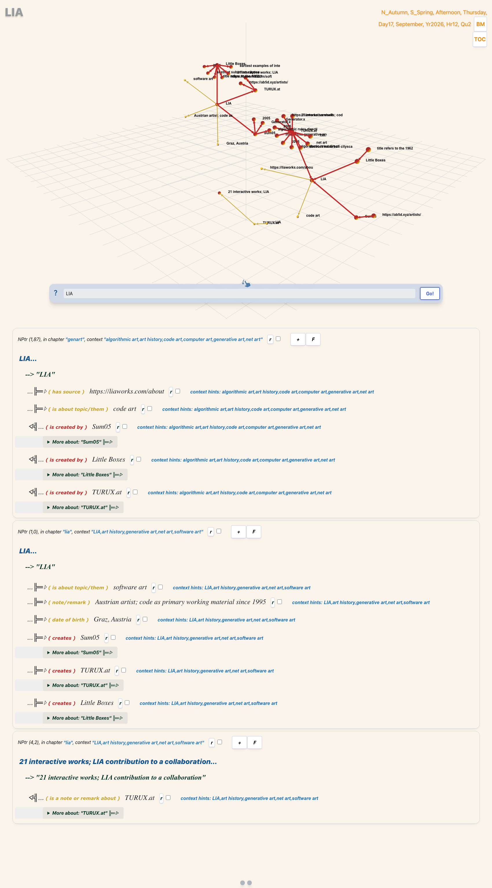

Thirty years of a single practice, stored as a graph instead of a list. LIA's software art, read through the relations rather than the dates.
Hover to trace. Tab to a node and press Enter to read its relations. Every edge below is drawn from the graph source, not hand-drawn.
Keyboard: Tab to a node, Enter or Space to select it. Screen readers: the summary line is announced; the relation rows are not individually announced. Not yet tested with VoiceOver or NVDA.
LIA's work resists a chronological list because the interesting thing is not what came after what. TURUX.at (1997) matters because it is interactive art built in code at a moment when the browser was barely a medium. Sum05 matters because it is a rule system that directs autonomous agents. Little Boxes matters because it takes the suburban grid and runs it through that system. Stated as a list those are three facts. Stated as a graph they are one argument.
So this note is backed by a graph, written in N4L — the language of SSTorytime — compiled and loaded into a real Postgres instance. The page you are reading queries the same structure that is stored in the database.
SSTorytime has no link table. Edges live as fixed-width arrays on each node row, and the four arrow types below are the entire vocabulary. That constraint is the point: with a handful of arrows you cannot encode a hundred vague relationships, so every edge has to earn its place.
| Arrow | Reads as | Used for |
|---|---|---|
| (cr) | creates | authorship and production |
| (ex) | is an example of | class membership |
| (year) | happened in years | time |
| (source) | has source | provenance, every node |
| (about) | is about | topic and medium |
| (note) | note / remark | the claim itself |
LIA is a person, and in a graph like this a person is a hub risk — every
edge ends up pointing at them and the structure becomes a star that tells
you nothing. The fix is to make the works the load-bearing nodes
and let the practice be a context rather than a centre. That is why
LIA carries the year range and the medium, while the works
carry their own lineage.
The drawing opens in structure only: five nodes that
declare something, wired by creates and
is an example of. The other sixteen nodes are values — a town,
a date, a remark, a URL — not subjects. Select every edge to bring
the property edges back, and they come back dashed, because a remark is not
a relation.
The result is a small graph in which you can ask a question a list
cannot answer: follow creates out of any node and you are
walking the actual body of work; follow is an example of and you
are walking the medium.
This is the complete graph. It is short on purpose.
The screenshot below is the SSTorytime viewer, driven by a headless browser against the local instance, querying the LIA node. It is a capture of the real database, not a mock-up.

The live causal cone for LIA, read from Postgres through the SSTorytime http_server.